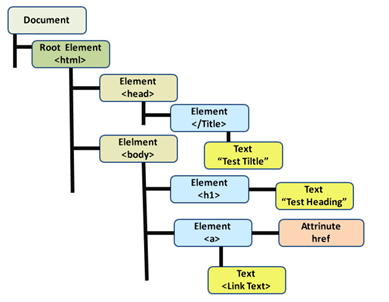

Summing up the relationship between these languages in a simple analogy would be the makeup of the human body. HTML represents the Skeletal structure of the body. It determines the rough form of what the body will look like but there is not much else more to it. CSS is the skin and exterior features of the body that establish the visual Identity. What colour eyes you have, how your hair is styled, as well as various other visual features would all be defined by CSS. Finally, JavaScript is the brain, and nervous system of the body that allows everything to work and interact together. The brain is constantly sending messages throughout the body to perform actions, much like JavaScript would on a website. Without it, the body would be rather lifeless and static.
Control flow simply put is the order in which code is executed based on what has been written. In its most basic form, code will tick off tasks line by line. However, there are many instances in which conditions are given that change the order and sequential structure of a code. For example, conditional statements such as If else statements require a certain condition to determine if a block of code is run or ignored. A comparable example of this in our day to day life is a doing the laundry. The task itself is straight forward but encounters a few conditions that will alter the process.
For example If the clothes being washed are delicates, run the delicate cycle on the washing machine, if not then run the standard setting. When it comes to loop conditionals, the weather could impact the drying process. While it is raining outside, put all clothes in the dryer and if the rain stops then the clothes can be hung outside to dry.
The DOM (Document Object Model) is the structural interface for your HTML document. The main purpose of the DOM is to make an HTML structure accessible for other programming languages such as JavaScript. It provides a family tree like view that shows the elements such as the root of the Document, Div Containers, and all the HTML Elements.
In a more detailed look, you can access the attributes, classes, and content inside each element. By being able to access the DOM using other programming languages, the ability to make more complex and unique websites becomes much easier. A common use of DOM manipulation on a website is a click event. Because JavaScript can now access an element through the DOM, it can run blocks of code according to specific interactions with HTML elements (“if the user clicks this button, run this code”).
The key difference when accessing arrays or Objects are that when you access an object, you are accessing a property and receive a return value.
var menu = {
"steak" : {
"price" : 20,
"serves" : 1
}
}
menu.steak.price;
20
When accessing an array you either return the entire array, or access specific parts of an array through indexing.
var myArray = [“dog”, “cat”, “bird”]
myArray[2];
“bird”
In a more complex data structure. You will find Objects nested inside of other objects or Arrays. This makes accessing data slightly trickier requiring a combination of both methods to access the correct data.
var menu = [{"porkbelly" : {
"price" : 19,
"serves" : 2,
}},
{"steak" : {
"price" : 20,
"serves" : 1 }}
]
menu[1].steak.price
20
Functions are contained blocks of code that are run when the name of the function is called in. What is written inside of a function is completely up to the developer but what makes functions ‘functional’ is their ability to be called anywhere by simply writing their name “myFunction()”. What makes this beneficial is the time saved on rewriting the same code repeatedly, as well as saving frustration by not having to change 30 instances of the same code block when you make a tweak. Functions are your friend and could be the difference between 500 lines of code or 1000.
var shoppingList = [];
shoppingList.push("Lettuce");
console.log(shoppingList);
shoppingList.push("Ham");
console.log(shoppingList);
shoppingList.push("Cheese")
console.log(shoppingList);
var shoppingList = [];
function addGroceries(item) {
shoppingList.push(item);
console.log(shoppingList);
}
addGroceries("ham")